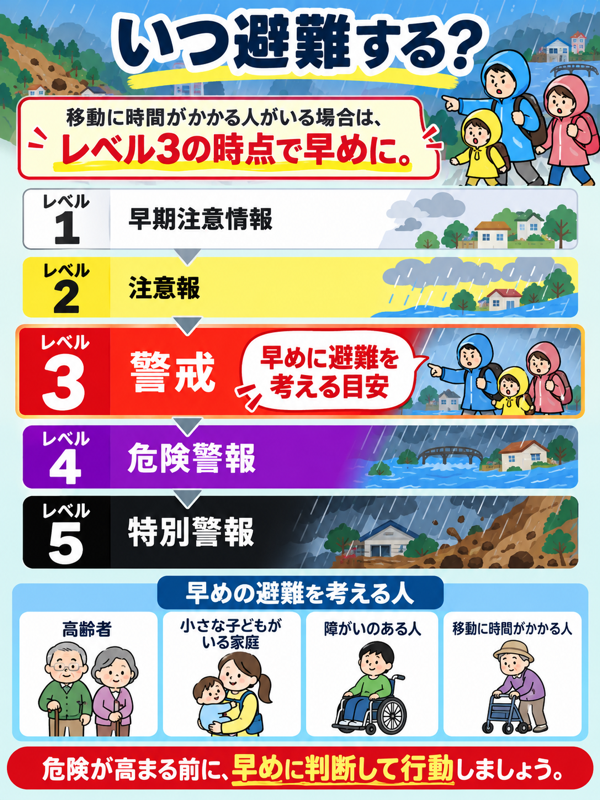
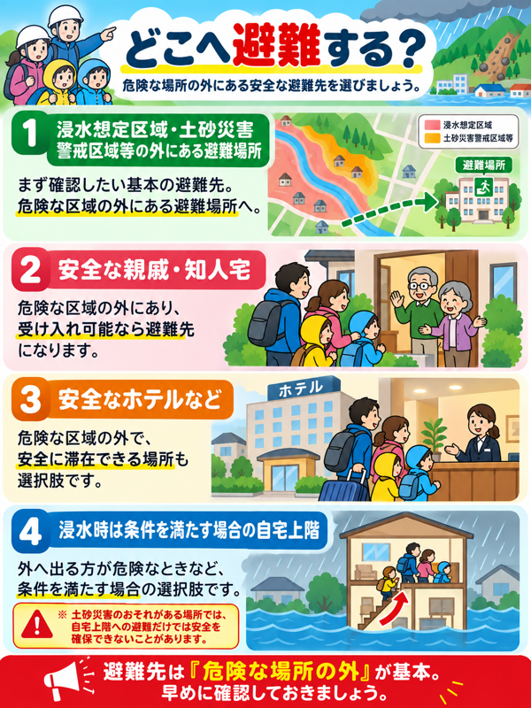
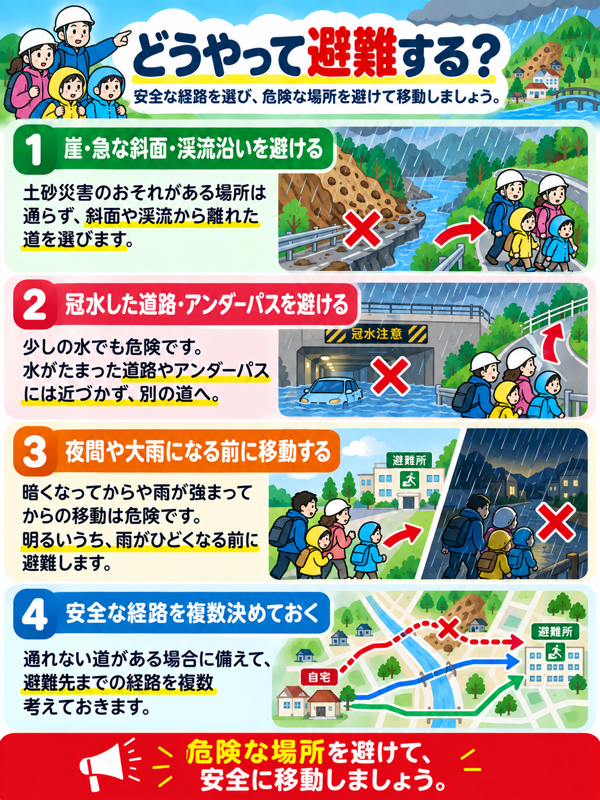

早期注意情報
災害への心構えを高める
早期注意情報Step 03
浸水と土砂災害の違いを踏まえ、自分や家族に合った安全確保の方法を考えます。
警戒レベルと防災気象情報は、避難のタイミングを考える目安です。
災害への心構えを高める
早期注意情報避難行動と経路を確認する
大雨・洪水・高潮の注意報高齢者・障がいのある人などは避難開始
土砂災害警報・洪水警報・氾濫警戒情報など危険な場所から全員避難
土砂災害危険警報・氾濫危険情報・高潮警報などすでに危険な状況。命を守る最善の行動を
土砂災害特別警報・大雨特別警報・氾濫発生情報など
移動に時間がかかる人がいる場合は、レベル3の時点で早めに。


安全に避難するための鉄則
車での避難は激しい渋滞を引き起こし、水没してドアが開かなくなる事故が多発します。原則、両手を空けて徒歩で避難します。
⚠ やむを得ず車を使う場合は冠水前に完了
長靴に泥水が入ると水圧で極端に重くなり、足が抜けなくなります。紐でしっかり締められる頑丈なスニーカーを履きます。
濡れても歩行できる靴を選択
外れたマンホールや側溝は水面下で視認できず転落死します。警戒レベル3の段階で、明るい日中のうちに避難を終えます。
☀ 暗くなってからの移動は命取り